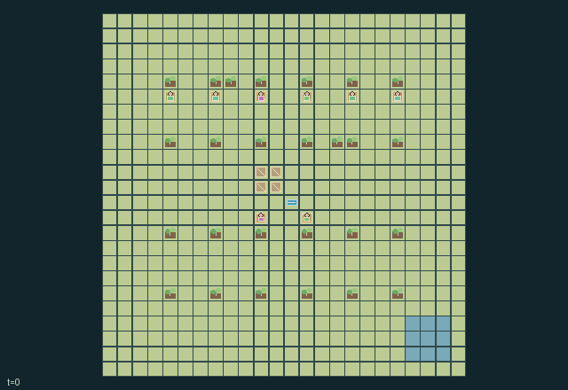

GI217 · Seedwind Orchard

Original recording scope: 角色0实际作者动作段 · Mode: 实际诊断回放
Additional generated state replay (different trajectory / full-state debug)

Choose fruit-quality, seed propagation, grafting, plot renewal, shared shelter or water-support goals in a finite 24x24 eight-gardener ecological world.
Identity and original contract
8 independently actionable roles; 24 discrete commands per role; 1192 native observation columns per role; original horizon 512 steps. Declared per-step reward range: -4 to 8. Observation regime: partially_observable.
Source SHA-256: 78a651a4ff09f8353eddeb74fcd42a854cfc1f95df4cd61cbab49e1920161c66
The objective, rewards, population, map and horizon remain original. A preview is not a success claim.
Objective and gameplay
Choose fruit-quality, seed propagation, grafting, plot renewal, shared shelter or water-support goals in a finite 24x24 eight-gardener ecological world.
Harvesting removes a parent's canopy and ripe seedbank, changing neighboring shade and future windborne offspring. Windbreak placement/orientation changes other plots' seed access. Four shared drying slots, a finite reservoir and complementary pruning/building/grafting/watering abilities force spatial and temporal coordination.
- Eight gardeners share twenty-four plots, eight borrowable baskets, four drying slots, a finite well reservoir and persistent windbreaks.
- Foragers create timber; builders turn timber into windbreaks or a rainproof shared roof; propagators graft; waterkeepers supply moisture.
- Harvesting gives fruit but resets the plant to stage two, removes canopy and consumes its ripe seedbank. A basket catches the wet seeds if it has room.
- Dry traits require two, four or six usable shed ticks. Wet and dry seeds together are capped at six per basket.
- Wind moves real seeds every second tick. Their trait is inherited; a suitable empty moist bed can receive a seed.
- Windbreak orientation blocks seed passage; mature tree canopy and windbreaks shade eastern neighbors. Shade saves moisture but prevents hardy-trait growth.
- Clearing young growth opens a bed for replanting. Grafting consumes both dry base traits and produces a hybrid crop.
- Rain renews water and fertility. Harvests and local goals never reset the bounded world; tick 512 is its observation window.
Ending: No mandatory harvest, construction or biodiversity threshold terminates this world. terminated remains false and tick 512 truncates; each harvest, dry cycle and planting leaves the world persistent.
What this game explores
Resource commons & externalities: An action changes a persistent resource or burden that another role also encounters. Compare extraction with maintenance and record the downstream resource trajectory.
Complementary production & service: A useful outcome requires ordered stages, scarce equipment or another role's capability. Measure real completed products and resource circulation rather than counting intermediate actions as success.
These are questions supported by rule structure, not observed learning effects.
Play it: operating walkthrough
crucibles play --game gi217Keep Python running and open its printed address. Select this game, set a seed and press Create session. The game itself is always English.
Assign a role range to Host with Assign / take over, or Assign all roles. Invite a second participant with Create player invitation, then assign a disjoint subset. Every original role is available.
For every owned role choose a legal command and press Queue. Arrow keys / WASD queue a declared directional action for the current role camera when available. Space or Advance one joint step advances everyone together. Non-directional games use the selectors.
Unqueued roles use the labelled untrained uniform-legal policy. Take over or release roles before the next step without resetting. Full-state debug is privileged and permanently logged; role cameras preserve permissions. Close the session to retain logs. Server restart does not restore sessions.
Complete command reference
IDs and English labels exactly match the manifest. Availability depends on role, resources, location and phase. An available action can still have no productive effect.
0·Wait
1·Walk north and face north
2·Walk east and face east
3·Walk south and face south
4·Walk west and face west
5·Pick lowest-index adjacent unheld seed basket; hands must be free
6·Put held seed basket on current tile
7·Harvest adjacent ripe crop for fruit; collect wet seeds if carrying a basket with room
8·Plant selected dry seed into adjacent empty moist bed
9·Set held basket on adjacent empty shared drying slot
10·Fill carried water to three from shared reservoir at well; waterkeeper
11·Water adjacent needy bed with one carried unit; waterkeeper
12·Prune mature growth for two timber or clear young growth for one; forager
13·Build a front windbreak for two timber; builder
14·Rotate adjacent standing windbreak orientation
15·Lift adjacent windbreak with free hands
16·Place held windbreak on clear front cell
17·Graft nearby growing crop to hybrid using one dry seed of each base trait; propagator
18·Upgrade shared drying roof with two timber; builder
19·Select next seed trait: hardy, lush, hybrid
20·Give one selected dry seed to adjacent peer's carried basket
21·Mulch adjacent depleted soil with one timber
22·Dismantle adjacent windbreak and recover one timber; builder
23·Release one selected dry seed from held basket into the current wind
Roles and capability identifiers
These original role names describe capabilities, not interchangeable skins. Check each owned role's legal selector before planning handoffs.
agent_0·Western propagator: grafts dry seed traits
agent_1·Western forager: prunes or clears plants for timber
agent_2·Northern builder: windbreak construction and shed upgrade
agent_3·Northern waterkeeper: shared reservoir and watering
agent_4·Eastern propagator: grafts dry seed traits
agent_5·Eastern forager: prunes or clears plants for timber
agent_6·Southern builder: windbreak construction and shed upgrade
agent_7·Southern waterkeeper: shared reservoir and watering
Information and observation permissions
The static ground map, facility/drying-slot locations, clock, wind/rain/daylight, wind offset, reservoir and roof are public. Dynamic gardeners, bed/canopy/soil/seed states, basket contents/holders, windbreaks and seed particles are visible only within Manhattan radius four. Every hidden record is -1 with an explicit visibility bit; inactive seed/windbreak capacities are also hidden. Each actor additionally sees only its own trait-achievement flags and five reward components. Shared establishment reward reveals an aggregate count, without a remote crop identity, trait or location. No distant current crop is exposed through public scene events or HUD fields.
The GIF is full-state debug and may reveal hidden entities or private state. Train on obs[agent], not the picture, state tree or another role's private row. Field slices and visibility are in the original manifest.
Reinforcement-learning integration
import jax
from crucibles_jaxmarl import make
env = make("gi217")
key = jax.random.PRNGKey(0)
key, rk, ak, sk = jax.random.split(key, 4)
obs, state = jax.jit(env.reset)(rk)
actions = env.sample_actions(ak, state)
obs, state, rewards, dones, info = jax.jit(env.step_env)(sk, state, actions)
done = dones["__all__"]Observations are float32 vectors of width 1192; actions are scalar int32; masks have 24 entries. Supply all 8 roles each transition. Masked sampling is an engineering reference, not a trained learner.
step_env retains terminal data without reset. step performs outer autoreset and keeps terminal data in info["raw_state"] and info["raw_observation"]. Use dones["__all__"] for episode boundaries; separate completion, failure and time limit in analysis.
JIT or vmap equal identities and shapes. Split independent reset, policy and transition keys. Group different shapes explicitly; do not shrink the population or horizon. Host rendering stays outside training.
Training questions and fair evaluation
Define valid completion from the objective before fitting. Preserve original rewards and also report real deliveries/services, losses, resource state, unresolved episodes and per-role returns. Animation is not a reward signal.
An action changes a persistent resource or burden that another role also encounters. Compare extraction with maintenance and record the downstream resource trajectory.
A useful outcome requires ordered stages, scarce equipment or another role's capability. Measure real completed products and resource circulation rather than counting intermediate actions as success.
Compare memory, communication or centralized critics under matched actor information. Declare critic access; keep actor inputs role-filtered. Match partner/opponent distributions, masks, compute and checkpoint selection. Final tests never enter fitting or selection.
Independent training runs or source-pairing blocks are inferential units; episodes from one policy are not independent training replications. Save hashes, keys, versions, device, time and cost. Negative, zero, failed and indeterminate outcomes are valid. No trained checkpoint or target score is supplied.
Classification and evidence
Overlapping editorial labels are reading aids, not proof of novelty, difficulty, strategic equivalence or learning effects.
- Resource commons & externalities
- Evidence
manifest.task.objective: Choose fruit-quality, seed propagation, grafting, plot renewal, shared shelter or water-support goals in a finite 24x24 eight-gardener ecological world.
- Evidence
manifest.task.interaction: Harvesting removes a parent's canopy and ripe seedbank, changing neighboring shade and future windborne offspring. Windbreak placement/orientation changes other plots' seed access. Four shared drying slots, a finite reservoir and complementary pruning/building/grafting/watering abilities force spatial and temporal coordination.
- Evidence
manifest.task.observation_access: The static ground map, facility/drying-slot locations, clock, wind/rain/daylight, wind offset, reservoir and roof are public. Dynamic gardeners, bed/canopy/soil/seed states, basket contents/holders, windbreaks and seed particles are visible only within Manhattan radius four. Every hidden record is -1 with an explicit visibility bit; inactive seed/windbreak capacities are also hidden. Each actor additionally sees only its own trait-achievement flags and five reward components. Shared establishment reward reveals an aggregate count, without a remote crop identity, trait or location. No distant current crop is exposed through public scene events or HUD fields.
- Complementary production & service
- Evidence
manifest.task.objective: Choose fruit-quality, seed propagation, grafting, plot renewal, shared shelter or water-support goals in a finite 24x24 eight-gardener ecological world.
Source, receipts and preview limits
The additional generated state GIF replays saved untrained legal actions through the original kernel. At most 25 actual endpoints include initial and terminal state; no invented interpolation. It is full-state debug, not the role observation. Where an original scene preview exists, it is displayed first with its own recorded information scope. The two recordings may use different trajectories and views.
Original source, observation slices, manifest and mechanism
Native receipt · Presentation receipt
Engineering passes do not establish learning. Nonzero floating differences remain recorded and undetermined; no new tolerance was introduced. Human scores remain unverified.